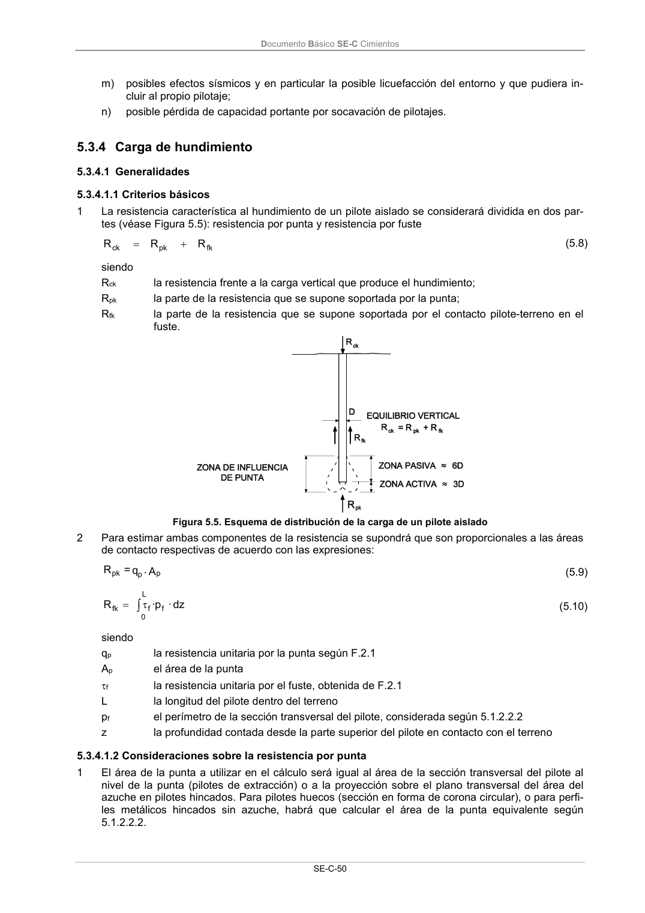

DB-SE-C · Fragmento de PDF p55 · versión 2019-12-20 · capa oficial
Formatos: JSON compacto · Markdown · PDF fuente
Ámbito del documento · texto del ámbito · documento y tablas
ID técnico a0126 · PDF pág. 55 · jerarquía no validada por persona · no es capítulo: sin_linea_de_encabezado · padre: raíz · literal original en el contenido: «5.3.4 Carga de hundimiento 5.3.4.1 Generalidades»
5.3.4 Carga de hundimiento 5.3.4.1 Generalidades 5.3.4.1 Generalidades

PDF fuente redistribuible: copia fiel enlazada en esta página (SHA256 verificado).